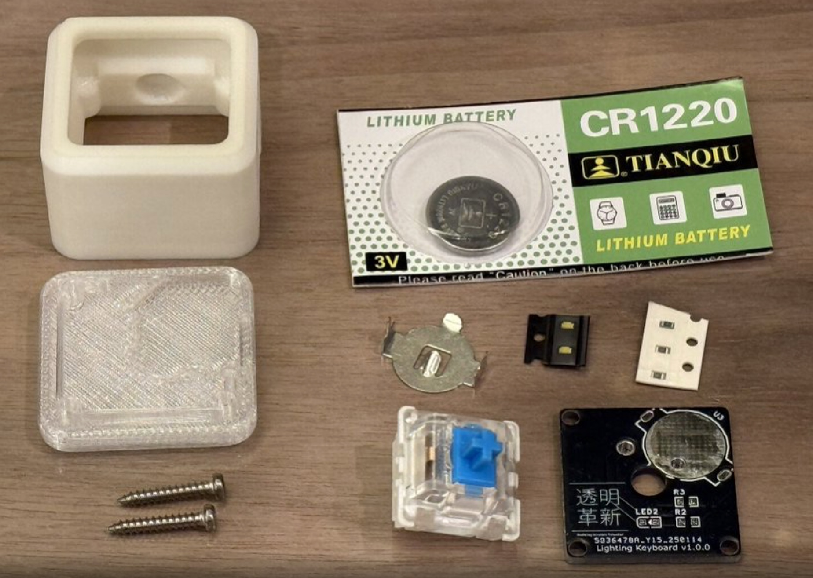
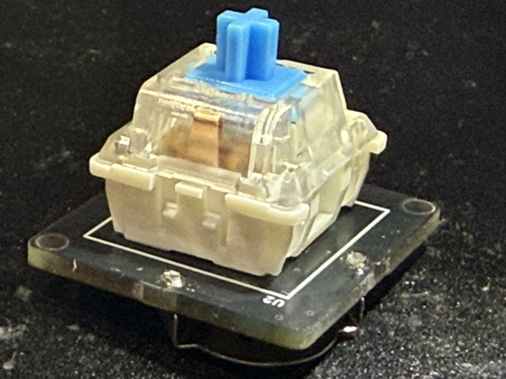

コンセプト
Lumikeyは、スイッチを光らせるための最小構成にこだわったワンキー・キーボードです。キーキャップを好みの色で発光させたり、ちょっとしたはんだ付けの練習にもぴったり。組み立ては手のひらサイズで完結します。
部品リスト
必須部品
- Lumikey PCB
- メカニカルキースイッチ (MX互換)
- キーキャップ (1Uサイズ推奨)
- チップLED
- チップ抵抗
- 電池ホルダ
- 電池
- ケース
- カバー
- M2ねじx2
工具
- はんだごて
- フラックス付きはんだ
- ピンセットまたはスイッチプラー
- ニッパー
- プラスドライバー
組み立て前チェック
作業スペースを確保し、静電気対策として金属部分に触れておきましょう。
組み立て手順
-
 必要な部材が全て揃っていることを確認してください。工具や消耗品も含め、作業中に足りなくならないよう事前にチェックします。
-

基板を取り出します。部品面と裏面に傷や反りがないか軽く確認しておきましょう。
-

R2・R3にチップ抵抗を半田付けします。位置がずれないようピンセットで支えながら作業するときれいに仕上がります。
-

LED2にチップLEDを向きを合わせて半田付けします。
このときチップLEDの裏面の◀︎と基板シルクの◀︎が同じ方向を向いていることを必ず確認してください。
-

◀︎の向きが合った状態で半田付けします。ランド同士にブリッジがないか、ルーペで確認すると安心です。
-

キースイッチを準備します。スイッチの脚がまっすぐかどうかもここでチェックしておきましょう。
-

キースイッチの右側のリードを3mmカットします。ニッパーを使用し、切りくずが飛ばないよう注意してください。
-

キースイッチを半田付けします。スイッチが斜めに入らないよう、まず片側だけ軽く半田を流して位置を調整してから本付けすると安定します。
-

電池ホルダを準備します。固定ツメやリードの状態を確認しておきましょう。
-

電池ホルダの突起をカットします。こちらもニッパーを使い、切断面が鋭くならないよう軽く整えます。
-

電池ホルダをカットした部分が中央に来る向きで半田付けします。このとき電池ホルダが斜めにならないよう気をつけ、リードの根本まで半田が流れているか確認してください。
-
 電池ホルダの飛び出した部分をカットして完成です。仕上げにフラックスを洗浄し、LED点灯とキー入力を最終確認しましょう。
トラブルシューティング
LEDが光らない場合
- LEDの向きを再確認します。
- 電池の向きが間違っていないか再確認します。
キーキャップがはずれやすい場合
- キースイッチとキーキャップの間にラップを挟んで隙間を調整してください